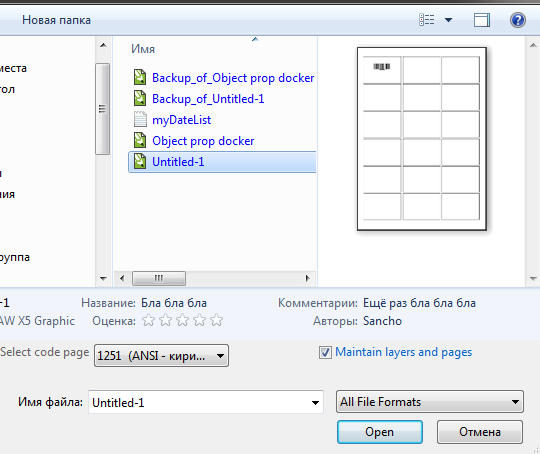

Свойства документа
vovan1953 / 17.11.2011, 20:15/00:41
Форум:
Версия программы:
15.2.0.686 (sp3)
Перед сохранением и закрытием файла можно добавить данные на панель Свойства документа
Вопрос: как и где можно увидеть эти данные ПЕРЕД открытием этого файла впоследствии ?
Корел Х5 под ХР эти данные показывает, а под W7 - нет.
Совсем ни чего не понял.
Я, кажется, расшифровал. Перевожу:
В диалоговом окне Document Properties можно ввести заметки-комментарии (Notes). Потом, не открывая файла, в его свойствах (в Проводнике или другом файл-менеджере нажать на файл Alt-Enter) можно, вместе с другими сведениями о файле, прочесть эти комментарии. В WinXP эти комментарии показываются, а в Win7 — нет.
Сам проверить не могу, у меня установлен XP, там все показывается...
В Win7 и в свойствах и в самом проводнике (внизу) всё отображается.
Вот скриншот Открытие документа CD X5 под Windows 7. Подскажите, где тут ВСЁ отображено ? Имею в виду всё те же Свойства документа (или заметки к нему).
vovan1953, скрины не нужно делать конского размера, мы не слепые и место на сайте не резиновое.

При сохранении файла в CD12 в поле "Заметки" можно было указать доп. данные о файле.
Перед открытием файла, лишь выделив его курсором, можно было ЭТИ ЗАМЕТКИ прочесть. Та
же картина и с Х5, но только в ХР! В семёрке я не могу найти иного места для сохране-
ния доп. данных (т.е Заметок) кроме как пройдя по пути: Файл > Свойства документа >
Заметки. Как и где ПЕРЕД открытием файла Х5 в семёрке увидеть эти Заметки ? Прилагаю скриншот Открытие документа Х5 в ХР. Здесь как раз всё это имеется.
vovan1953, скрин исправь до нормально размера. Если по хорошему не понимаете буду банить на недельку для лучшего разъяснения, а скрин удалю.
Sancho, похоже, моя проблема мало кому понятна и интересна. Скрины буду обрезать до минимума. Спасибо Вам большое.
vovan1953, мне всё понятно, я даже мог бы ответить, но при таком откровенно наплевательском отношении к моим замечаниям, нет ни какого желания отвечать.
Второй скрин отправил до получения вашего замечания. Принял к сведению. Если это возможно - удалите их. Если это должен сделать я - подскажите, как. Я и вправду совсем
пока чайник на форуме.
Страницы